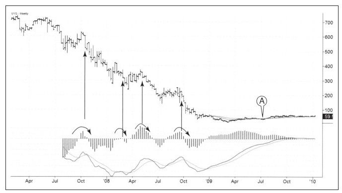

在我写本节内容的时候，我收到一封来自Spike交易集团员工格兰特·库克的电子邮件，他是Spike集团的精英。信是这样说的：
真正让我觉得异常的事情是这次熊市开始时，恰好也是2倍和3倍杠杆ETF基金发行时。杠杆特性和市场波动导致这些新奇的交易工具波动巨大，最臭名昭著是UYG/SKF和URE/RSR。由于对冲基金管理人的冲击，SKF由最高300跌到现在的20以下，SRS同样也到过300，但目前在6上下。很明显，这些交易工具的波动因为杠杆作用和罕见的衰退而被过分放大。但是，天哪，这是什么波动——新兴市场同样非常巨大，好像它们承担了所有衰退的威胁一样。
有利的一面是，美国政府给了市场很多，媒体和普通民众对华尔街和金融市场充满敌意甚至是憎恶，联邦政府的政策摇摆不定，表现为低利率、回购等。恢复性反弹的强度超出了所有参与者（包括我）的想象。包括我在内的一些人把这次反弹称之为“福利性”投机。我认为联邦政府提到的所谓“挽救全球金融体系”，他们确实做到了。
图9-16让我们看到了金融市场的多变特性。超金融公司（UYG）股价从2007年创建时的70美元跌到2009年3月的1.37美元，价格跌去了98%。它揭示了几个我们先前讨论过的几个重要原则：
·周线快速和慢速（13周和26周）EMA的相对位置关系定义牛市、熊市。当快速EMA下穿慢速EMA时，确认市场进入熊市。这是个落后指标，但是它仍然可以定义主要趋势。它在整个熊市阶段一直处于卖出状态，直到市场在2009年11月反转向上，此时价格接近6美元水平。
·在熊市中，当MACD线反转到零线之上后再度跌穿零线时，就是做空信号。你可以在图中看到一年之中出现了4次这样的信号。如果你用这种方法监视不同行业的股票，你会发现它们之中这样的信号非常多。这就像你拥有一群状态稳定的马，它们能随意奔跑，有时自己跑，有时合群跑。
·无论是熊市还是牛市，波段交易比从头到尾都持单要容易。看看2008年3月的熊市反弹，这让UYG从240美元反弹到372美元，仅仅6周内，反弹幅度超过50%。你会在这样的反弹情况下一直持有空单吗？
·只要价格到达通道下轨附近，就该做好获利了结的准备。

图9-16诠释了金融市场中人们的痛苦与绝望程度，业余交易者被横扫出局，就连一些专家也因此丢了工作。就像春天始于冰下的水流，此时的市场也开始向上运行。